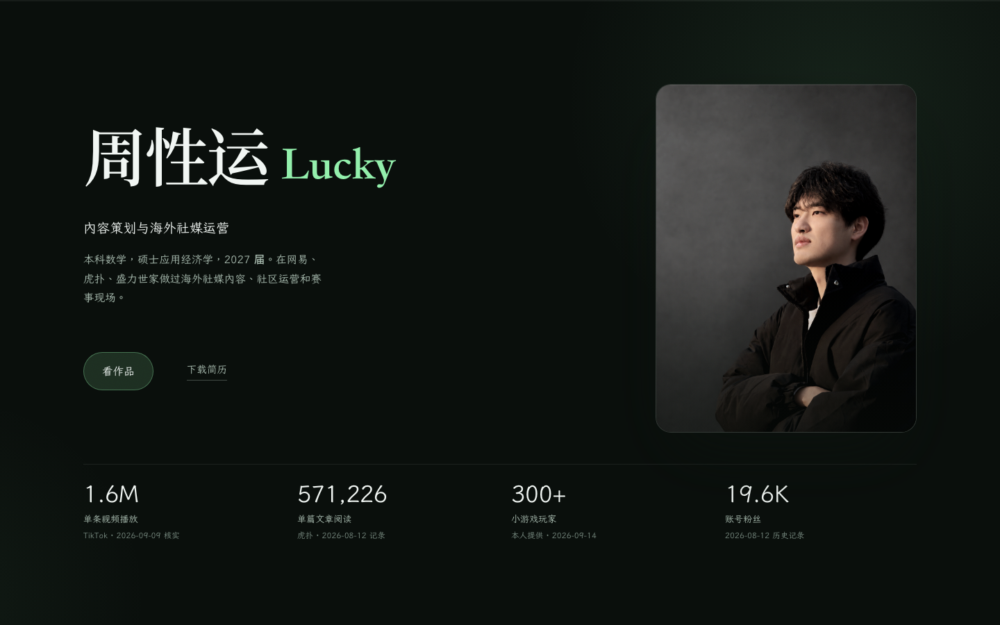
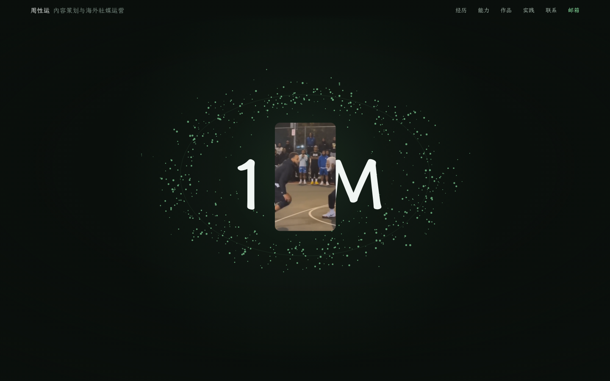
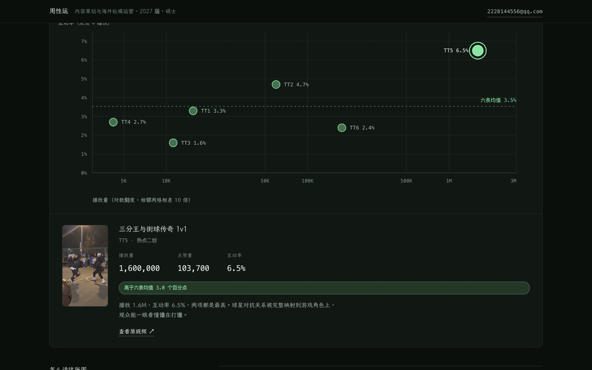

三个方向 · 初版
三份完整页面，同一份真实内容与数据，同一套无障碍基线。差异只在设计与叙事本身，因此可以直接对比。
A章制编辑体 + 一个峰值
不用任何库，靠对比与克制
- 页面语法
- 章制编辑体。整页从深色硬切到一屏骨白，用一次明暗切换制造起伏。
- 峰值
- 滚到代表作时底色硬切为骨白，1.6M 从 0 滚上去，主画面自下往上揭开。峰值前留一段近乎空白的静默。
- 动效
- 滚动揭示（标题遮罩擦除 / 段落逐层）、数字计数、章节进度、作品切换用 View Transitions。
- 成本风险
- 零新增依赖，无性能风险。辨识度中高，最稳。

首屏 · 证据条在第一时间出现看整页截图 ↗
打开方向 A
- 页面语法
- 电影式连续世界。指针与滚动速度共同驱动同一个粒子场，页面像被驾驶而不是被播放。
- 峰值
- 滚到中段时粒子向中心收拢成一个环，滚动打钉的三段论证依次亮起，然后作品图从内向外展开。
- 动效
- 粒子场（响应指针 + 滚动速度）、逐字浮出、打钉舞台、图框 expand、速度塑造强度。
- 成本风险
- 零依赖但计算量最大；低端机与降级路径需要单独处理。辨识度最高。

峰值 · 粒子收拢成环，1.6M 在环中心计数看整页截图 ↗
打开方向 B
- 页面语法
- 节奏切分 + 数据可视化。作品不是被陈列，是被测量。
- 峰值
- 六条作品的播放量 × 互动率散点图，可点可键盘选中，联动详情；旁边直接给结论。
- 动效
- 点从轴线上长出、条目条宽生长、数字计数、hover 联动高亮。
- 成本风险
- 零依赖，但信息设计工作量大于动效。人设最突出，别人抄不走。

峰值 · 播放量 × 互动率，点可点击也可键盘选中看整页截图 ↗
打开方向 C